Här är era 18 hål som vi ritat dem. Svara på frågorna under varje hål och ge ert besked. Era svar sparas i den här webbläsaren medan ni fyller i, så ni kan ta en paus och fortsätta senare. Inget trycks eller publiceras innan ni har godkänt hålet.
Fyll inte i:
Par 5 · Index 12 · 56/60: 442 m · 52/49: 394 m · 44: 303 m
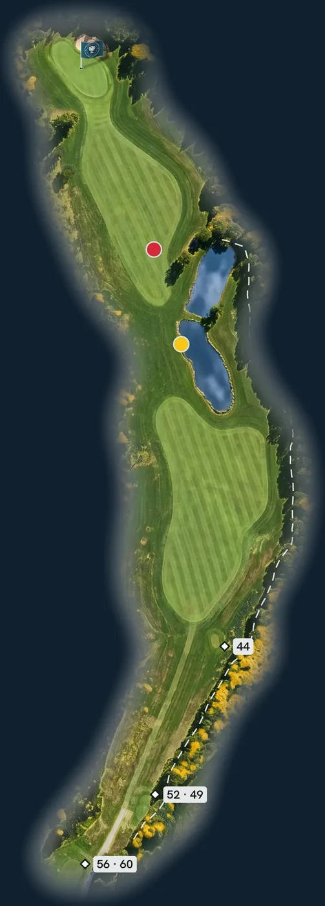
Vi mäter 435 m till mitten av greenen, scorekortet säger 442 m.
Vi mäter 392 m till mitten av greenen, scorekortet säger 394 m.
Vi mäter 305 m till mitten av greenen, scorekortet säger 303 m.
Vi har ritat out längs högersidan från 22 till 335 m från bakre tee.
Rundan börjar med en chans
Klubbhuset i ryggen och en kort par 5 som svänger mjukt vänster. Out på båda sidor håller dig skärpt, och längre fram blänker två dammar till höger. Lägg bollen rätt, så är greenen nära.
Ett relativt kort öppningshål, men det är out både till vänster och till höger.
Lägg andra slaget på högersidan. Då får du ett ganska kort inspel mot en green som sluttar svagt ifrån dig.
Vänsterkanten ger dig medstuds.
Par 4 · Index 4 · 60: 355 m · 56/52: 318 m · 49: 284 m · 44: 248 m
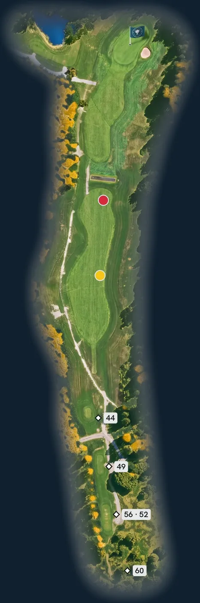
Vi mäter 345 m till mitten av greenen, scorekortet säger 355 m.
Vi mäter 313 m till mitten av greenen, scorekortet säger 318 m.
Vi mäter 278 m till mitten av greenen, scorekortet säger 284 m.
Vi mäter 243 m till mitten av greenen, scorekortet säger 248 m.
Vi har inte ritat någon out på det här hålet.
Dammen bestämmer längden
Hålet ser rakt och öppet ut. Men cirka 220 meter från tee 56 skär en fyrkantig damm tvärs över fairway, och hela högersidan fram till dammen är rött pliktområde. Index 4. Här vinner den som känner sin längd.
Lägg utslaget kort om den fyrkantiga dammen, som ligger cirka 220 meter från tee 56.
Då återstår ungefär 120 meter till en green som sluttar åt höger.
Högersidan fram till dammen är rött pliktområde.
Par 4 · Index 16 · 52/56/60: 290 m · 49: 274 m · 44: 199 m
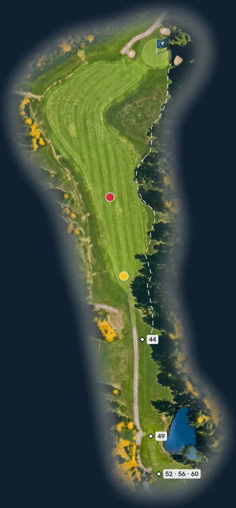
Vi mäter 276 m till mitten av greenen, scorekortet säger 290 m.
Vi mäter 251 m till mitten av greenen, scorekortet säger 274 m.
Vi mäter 191 m till mitten av greenen, scorekortet säger 199 m.
Vi har ritat out längs högersidan från 80 till 276 m från bakre tee.
Frestelsen heter 240 meter
Ett kort par 4 som svänger höger mot en liten, inbunkrad green. Genvägen lockar redan på tee, men out följer hela högersidan. Hålet avgörs innan du slår: modigt eller klokt?
Den långtslående genar mot greenen, men det kräver en carry på cirka 240 meter.
Medelgolfaren slår cirka 170 meter rakt fram och får då ett inspel på cirka 100 meter mot den lilla greenen.
Out längs hela högersidan.
Par 3 · Index 14 · 60: 176 m · 56/52: 140 m · 49/44: 125 m
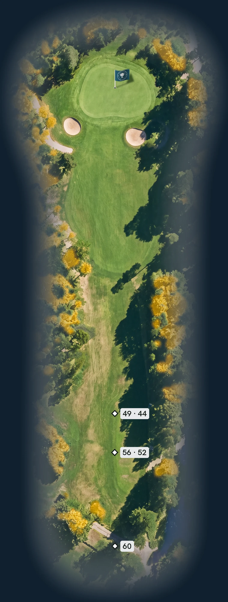
Vi mäter 176 m till mitten av greenen, scorekortet säger 176 m.
Vi mäter 140 m till mitten av greenen, scorekortet säger 140 m.
Vi mäter 126 m till mitten av greenen, scorekortet säger 125 m.
Rakt genom skogsgatan
Ett fint par 3 genom en smal skogsgata. Två bunkrar vaktar greenens framkant, en på var sida, och skogen står tätt inpå. Hålet begär bara ett rakt slag. Det är svårare än det låter.
Ett fint korthål där en sak gäller: spela rakt.
Bunkern till höger fångar de flesta bollar som går åt höger, så du slipper leta.
Rakt är rätt på det här hålet.
Par 4 · Index 8 · 60: 355 m · 56/52: 320 m · 49/44: 277 m
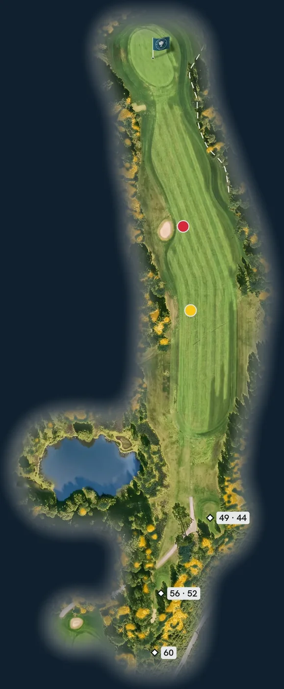
Vi mäter 352 m till mitten av greenen, scorekortet säger 355 m.
Vi mäter 317 m till mitten av greenen, scorekortet säger 320 m.
Vi mäter 270 m till mitten av greenen, scorekortet säger 277 m.
Vi har ritat out längs högersidan från 264 till 370 m från bakre tee.
Mer plats än du tror
Från tee ser fairway smalare ut än den är. En damm tidigt till vänster och en bunker längre fram på samma sida drar blicken åt fel håll. Den som litar på högersidan får en stor green att sikta på.
Det finns mer plats på högersidan än vad som syns från tee. Använd den.
Sneddar du för tight längs vänstersidan blir du lätt mask.
Greenen är stor och lätträffad.
Par 4 · Index 2 · 60: 331 m · 56/52: 301 m · 49/44: 245 m
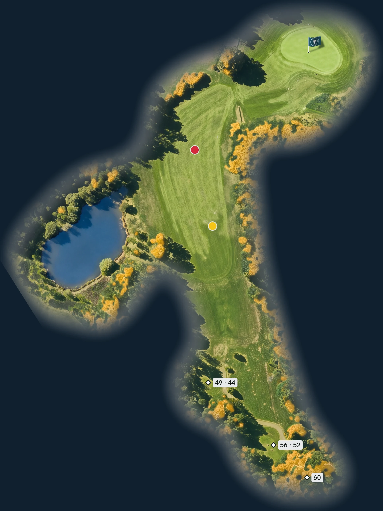
Vi mäter 325 m till mitten av greenen, scorekortet säger 331 m.
Vi mäter 295 m till mitten av greenen, scorekortet säger 301 m.
Vi mäter 245 m till mitten av greenen, scorekortet säger 245 m.
Vänster först, sedan platån
Index 2, och det märks. Fairway viker av åt höger bakom en rad träd som är mycket svåra att slå över. Greenen är stor men har platåer, så hålet är inte klart förrän bollen ligger på rätt nivå.
Håll vänster med utslaget. Träden på högersidan är mycket svåra att slå över.
Placera inspelet på rätt platå, annars väntar lätt en treputt.
Rätt platå sparar slag.
Par 3 · Index 18 · 56/60: 116 m · 52/49/44: 105 m
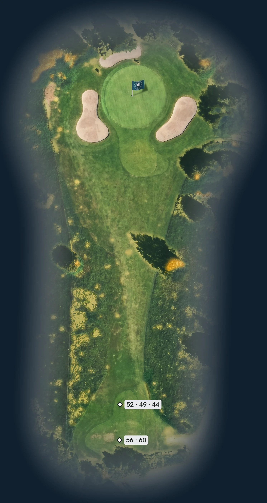
Vi mäter 115 m till mitten av greenen, scorekortet säger 116 m.
Vi mäter 103 m till mitten av greenen, scorekortet säger 105 m.
Banans bästa birdiechans
Index 18: det lättaste hålet på scorekortet. Ett kort par 3 mot en rund green med bunkrar runt om, som fångar nästan allt som missar. Träffa ytan, så står du med en birdieputt.
Ett bra birdiehål. Bunkrarna fångar upp det mesta som missar greenen.
Hamnar du i en bunker: gå inte ner eller upp via de höga slänterna. De blir lösa och risken för pluggade bollar ökar.
Träffa greenen, sedan är chansen din.
Par 4 · Index 6 · 60: 380 m · 56: 347 m · 52/49: 318 m · 44: 243 m
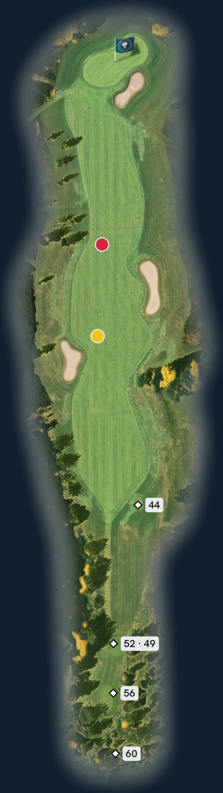
Vi mäter 378 m till mitten av greenen, scorekortet säger 380 m.
Vi mäter 345 m till mitten av greenen, scorekortet säger 347 m.
Vi mäter 318 m till mitten av greenen, scorekortet säger 318 m.
Vi mäter 243 m till mitten av greenen, scorekortet säger 243 m.
Banans snabbaste green
Utslaget går ut ur en smal gata i skogen, med out längs vänstersidan och tjock ruff till höger. Två fairwaybunkrar väntar på var sin sida. Belöningen är banans snabbaste green.
Ganska smalt utslag: out längs vänstersidan och tjock ruff till höger.
Placera utslaget på fairway, så blir hålet lättspelat.
Banans snabbaste green – var rädd om farten.
Par 5 · Index 10 · 56/60: 473 m · 52/49: 439 m · 44: 335 m
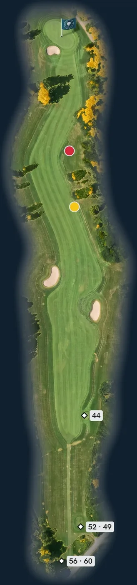
Vi mäter 465 m till mitten av greenen, scorekortet säger 473 m.
Vi mäter 434 m till mitten av greenen, scorekortet säger 439 m.
Vi mäter 335 m till mitten av greenen, scorekortet säger 335 m.
Bred start, smal final
Ett långt par 5 där utslaget får flyga. Gott om plats från tee, två fairwaybunkrar att hålla koll på, och sedan smalnar hålet av fram mot greenen. Det är transportslaget som avgör.
Här finns gott om plats från tee.
Framme vid greenen blir det ganska smalt. Placera transportslaget med precision.
Väl framme väntar en snäll green.
Par 3 · Index 11 · 60: 175 m · 56: 165 m · 52/49/44: 140 m
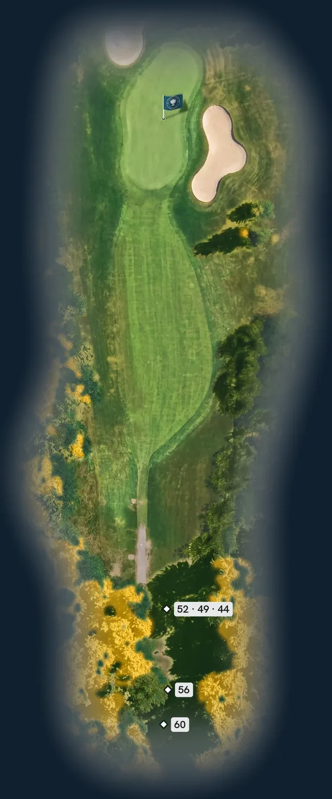
Vi mäter 173 m till mitten av greenen, scorekortet säger 175 m.
Vi mäter 164 m till mitten av greenen, scorekortet säger 165 m.
Läs flaggan, känn vinden
Ett långt par 3 ut ur skogen mot en smal green som är över 40 meter lång. Bunkrar vaktar både sidan och baksidan. Var flaggan står kan skilja flera klubbor, och vinden vill alltid vara med.
Ett bra korthål. Ta reda på var pinnen står innan du väljer klubba.
Känn efter hur vinden rör sig innan du slår.
Greenen är väl inbunkrad.
Par 5 · Index 13 · 60: 494 m · 56: 446 m · 52/49: 384 m · 44: 320 m
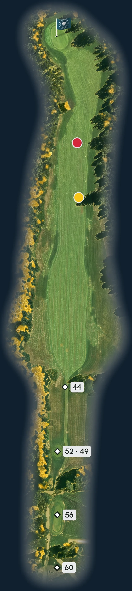
Vi mäter 489 m till mitten av greenen, scorekortet säger 494 m.
Vi mäter 441 m till mitten av greenen, scorekortet säger 446 m.
Vi mäter 383 m till mitten av greenen, scorekortet säger 384 m.
Vi mäter 324 m till mitten av greenen, scorekortet säger 320 m.
Nålsögat från tee
Utslaget går genom en smal ränna mellan träden. Klara den, så öppnar sig hålet efter dungarna med gott om plats på båda sidor. Sist väntar en liten, upphöjd green som kräver rätt längd.
Väldigt smalt från tee, men efter dungarna finns det mycket plats på båda sidor.
Placera transportslaget med precision, för inspelet kräver längdkontroll.
Liten, upphöjd green – längden avgör.
Par 5 · Index 3 · 60: 527 m · 56: 490 m · 52/49/44: 400 m
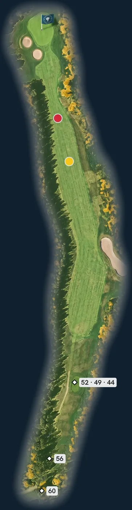
Vi mäter 525 m till mitten av greenen, scorekortet säger 527 m.
Vi mäter 488 m till mitten av greenen, scorekortet säger 490 m.
Vi mäter 398 m till mitten av greenen, scorekortet säger 400 m.
Tålamod genom skogen
En lång par 5 i en skogsgata, index 3. De sista hundra metrarna smalnar fairway av och svänger svagt vänster, med två bunkrar vänster framför greenen. Tålamod lönar sig: greenen är stor och snäll.
En lång par femma som kräver ett bra utslag.
Ta gärna ett lite längre tredjeslag, för framme vid greenen är det väldigt smalt.
Stor och snäll green.
Par 4 · Index 17 · 60: 359 m · 56/52: 320 m · 49/44: 270 m
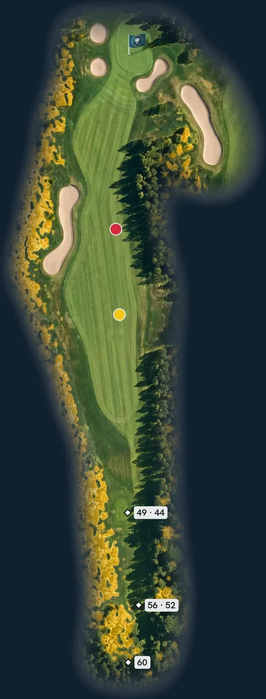
Vi mäter 354 m till mitten av greenen, scorekortet säger 359 m.
Vi mäter 320 m till mitten av greenen, scorekortet säger 320 m.
Vi mäter 266 m till mitten av greenen, scorekortet säger 270 m.
Sikta höger, landa mitt i
Index 17 på scorekortet, men fairway har en egen vilja. Den lutar mot vänster, där rött pliktområde och en lång bunker väntar. Greenen vaktas av bunkrar på båda sidor. Rätt linje gör halva jobbet.
Fairway lutar mot vänster och bunkern. Håll utslaget mot högersidan, så hamnar du mitt i med bästa vinkeln in mot greenen.
Den stora bunkern till höger har höga kanter på sina ställen. Gå aldrig ner i eller upp ur bunkern via slänterna.
Vänster fram till bunkern: rött pliktområde.
Par 4 · Index 1 · 60: 369 m · 56: 335 m · 52/49/44: 290 m
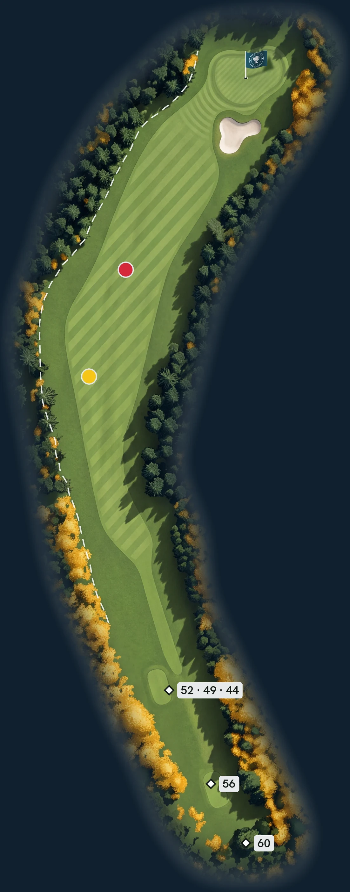
Vi mäter 368 m till mitten av greenen, scorekortet säger 369 m.
Vi mäter 338 m till mitten av greenen, scorekortet säger 335 m.
Vi mäter 293 m till mitten av greenen, scorekortet säger 290 m.
Vi har ritat out längs vänstersidan från 110 till 368 m från bakre tee.
Banans svåraste utslag
Index 1. Fairway böjer av åt höger genom granskogen, med out längs hela vänstersidan och skog till höger. En bunker vaktar greenen. Långtslående frestas att gena. Alla andra vinner hålet på tålamod.
Den långtslående genar över skogen mot greenen och får ett kort inspel.
Medelgolfaren ska inte utmana här. Det är out till vänster och skog till höger.
Spela hålet som ett par 5 – det är säkrast.
Par 4 · Index 7 · 60: 324 m · 56/52: 296 m · 49/44: 265 m
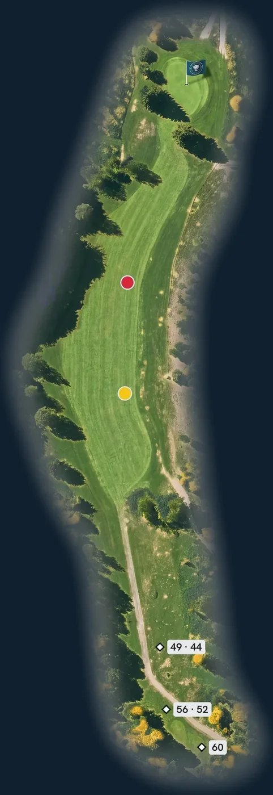
Vi mäter 315 m till mitten av greenen, scorekortet säger 324 m.
Vi mäter 301 m till mitten av greenen, scorekortet säger 296 m.
Vi mäter 265 m till mitten av greenen, scorekortet säger 265 m.
Följ den vänstra björken
Inte en enda bunker, och ändå index 7. Out följer högersidan, fairway smalnar av mellan granarna och framför greenen står en gran som ett plank. Här vinner den som läser hålet rätt.
Bästa linjen är rakt över den vänstra björken. Då hamnar du mitt i fairway.
Undvik högersidan, där det är out.
Håll inspelet högt. Granen före greenen fungerar som ett plank, och greenen är liten.
Björken från tee, högt inspel in.
Par 4 · Index 15 · 52/56/60: 297 m · 49/44: 259 m
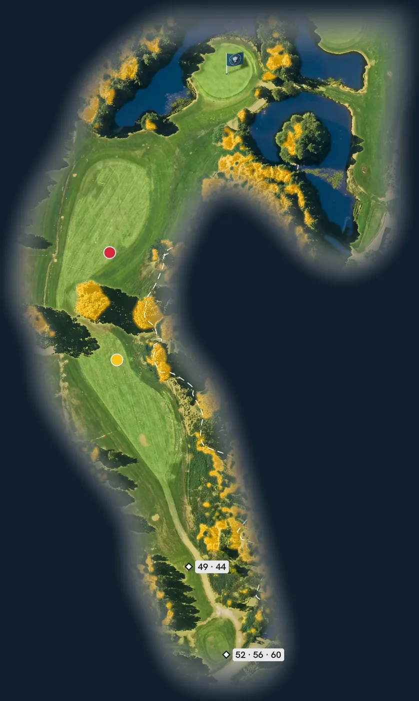
Vi mäter 290 m till mitten av greenen, scorekortet säger 297 m.
Vi mäter 253 m till mitten av greenen, scorekortet säger 259 m.
Vi har ritat out längs högersidan från 18 till 223 m från bakre tee.
En snäll green bland vatten
Ett kort par 4 som svänger höger upp mot greenen. Vattnet ramar in slutet, till vänster om greenen och i en damm till höger bakom. Ett kontrollerat utslag räcker långt. Flaggan avgör hur modig du ska vara.
En lätt fade på cirka 170 meter från tee ger dig ett kort inspel.
Står flaggan till vänster krävs längdkontroll.
Säkerhet: slå bara ut när blixtlampan framme till höger är släckt. Tänd lampan när du lämnat tee och släck den med knappen innan du går in på greenen.
Snäll green.
Par 3 · Index 5 · 52/56/60: 128 m · 49/44: 89 m
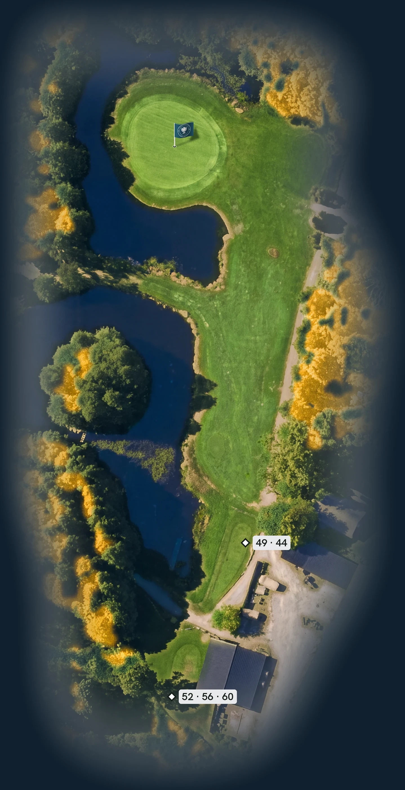
Vi mäter 126 m till mitten av greenen, scorekortet säger 128 m.
Vi mäter 90 m till mitten av greenen, scorekortet säger 89 m.
Signaturhålet över vattnet
Hålet alla pratar om efter rundan. Ett kort par 3 över vatten, förbi en trädö i dammen, mot en green med vatten till vänster, framför och bakom. Rätt klubba ger ett lugnt par. Fel klubba hörs.
Banans signaturhål. Rätt längd och riktning, så gör du ett säkert par.
Slår du vänster, kort eller långt blir det blött.
Bakom greenen är det rött pliktområde hela vägen.
Par 4 · Index 9 · 60: 423 m · 56: 383 m · 52/49: 325 m · 44: 270 m
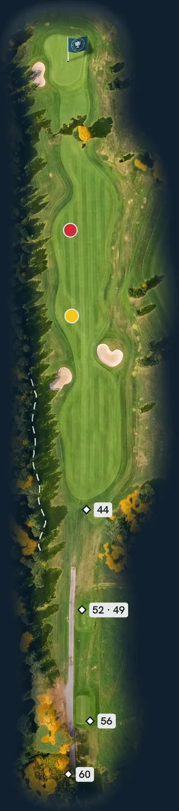
Vi mäter 418 m till mitten av greenen, scorekortet säger 423 m.
Vi mäter 379 m till mitten av greenen, scorekortet säger 383 m.
Vi mäter 322 m till mitten av greenen, scorekortet säger 325 m.
Vi mäter 264 m till mitten av greenen, scorekortet säger 270 m.
Vi har ritat out längs vänstersidan från 129 till 238 m från bakre tee.
Precision hela vägen hem
Sista hålet går hem mot klubbhuset. Två fairwaybunkrar ligger cirka 225–250 meter från tee 60 och kräver ett klokt utslag. Sedan väntar ett långt andra slag mot en green som lutar svagt ifrån dig.
Ett hål som kräver precision från tee. Lägg gärna utslaget hitom bunkrarna, så tappar du inte längd.
Andra slaget blir ganska långt, mot en svagt frånlutande green.
Se upp för flyers från ruffen. Bollen kan flyga över greenen, och där är det hård mark och övningsgreen.
Spela in från fairway, inte från ruffen.
Medlemsronder och greenfeeronder tillsammans. Siffran visar sponsorerna hur många som passerar deras hål.
Till exempel nya bunkrar, flyttade tees eller nya gångvägar.